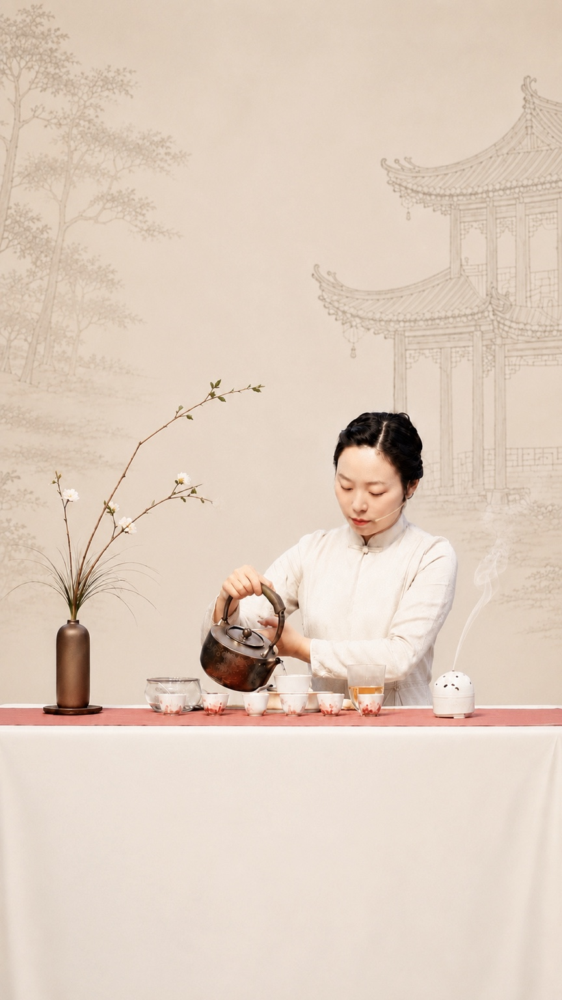

Behind Zhioise
A quiet practice behind the work.
This page remains intentionally understated. The brand, products and rituals come first.

Evelina Zhang
Tea & Incense Practitioner
Evelina Zhang is the person behind Zhioise. Her practice draws from Chinese tea culture, traditional incense craft, seasonal wellness and the aesthetics of everyday ritual.
Rather than placing the founder at the center, Zhioise lets the work speak through materials, fragrance, tea and the experience of stillness.